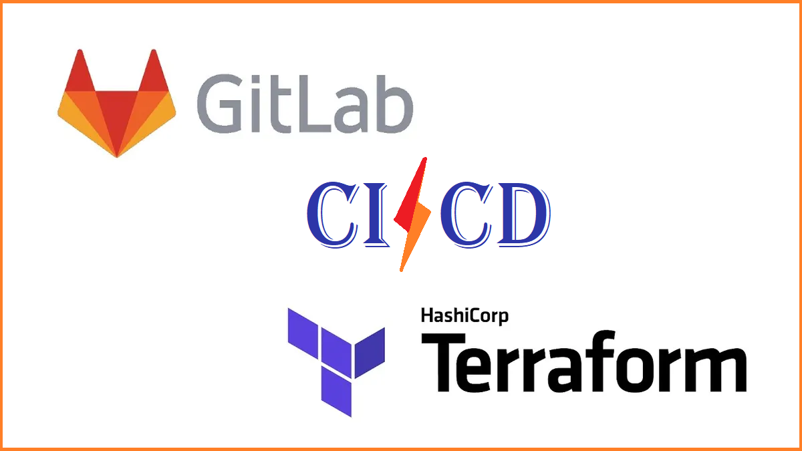
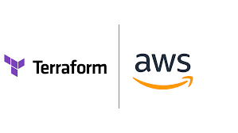
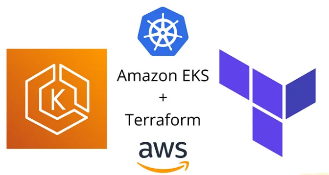

DevOps and Cloud Technology Implementation for Cloud-Based Software Products
Graduation Project with Excellent Grade
Utilized various devops and cloud tools such as Git, Gitlab, Terraform, Docker, AWS and more to facilitate hosting software products on the cloud. In coordination with Electronics and Communications Department, Faculty of Engineering, Mansoura University.

Gitlab based CI/CD with dynamic versioning enable efficient building, testing and deployment of website application on AWS. Optimized workflow and deployment strategiesfor enhanced efficiency
Infrastructure for a 3-Tier Application

Leverage Terraform to constrcut a robust AWS infrastructure supporting a 3-tier setup. The focus was on ensuring system reliability, high availability, scalability and accommodating a 3-tier application architecture to meet project objectives effectively
deploying application using Terraform

Demonstrated the use of Terraform to set up AWS VPC and orchestrate the deployment of EKS Cluster. The EKS Cluster hosted multi-container pods housing application and database, streamlining the infrastructure provisiong process for effective containerized deployments.

An Ansible playbook to automate setting up services on a server. Orchestrated httpd installation, established on HTML page, Configured firewalls, and rigorously validated server connectivity for robust functionality.